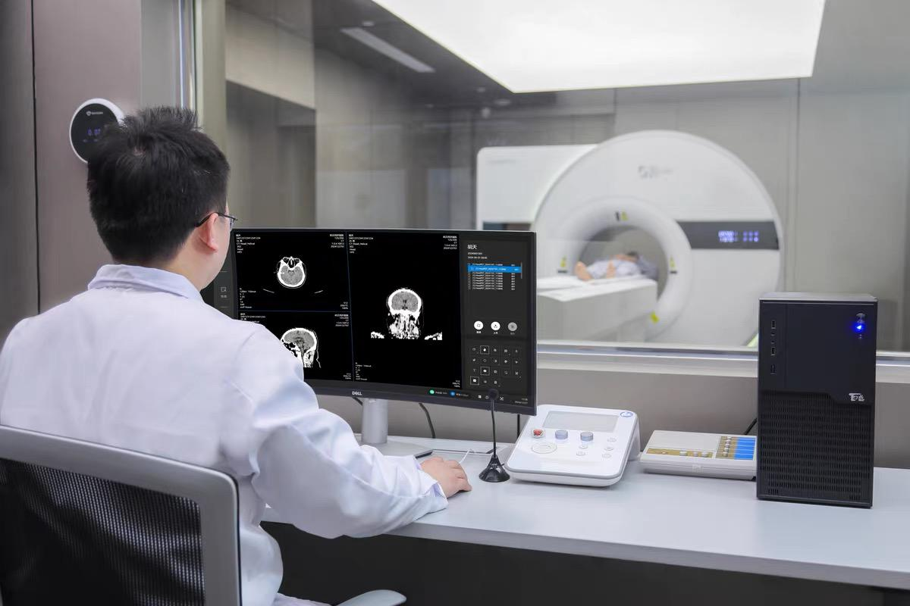

Plug-n-Image
A Unified Computing Architecture for Detection and Imaging: Infrastructure for the Intelligent Imaging World
The Plug-n-Image technology system is designed to facilitate flexible deployment of intelligent detection and imaging systems, support seamless end-to-end data analysis, and accelerate both clinical and pre-clinical research. It provides standardized, modular computational operators and access protocols covering the full workflow—from data acquisition and image reconstruction to data-analysis. With built-in AI-assisted capabilities for defining and scheduling imaging and analytics workflows, it enables the PnI Intelligent Imaging Engine to serve as a unified foundation. This engine supports detection and imaging computation, medical-image analysis, and clinical-research operations, forming the core platform that drives major scientific discoveries and next-generation technological breakthroughs.
The Plug-n-Image team is currently seeking external funding, along with other institutional partners. Contact petlab@hust.edu.cn to inquire.
Featured Progress
Plug-n-Image Intelligent Imaging Engine
This module introduces the PnI software architecture, which decouples the complete particle-detection and imaging workflow from top-level design. It abstracts complex core technologies—such as hardware control, data processing, image reconstruction, and correction—into a suite of well-defined functional modules with standard interfaces. Built on this modular foundation, the platform enables researchers to configure freely, leverages heterogeneous computing resources seamlessly, and addresses extreme computational demands including real-time, picosecond-level signal processing. In effect, it marks the advent of a graphical "operating system" for particle detection and imaging.
RayPlus Intelligent Medical Imaging Cloud Platform
Designed around the principles of openness, intelligence and scalability, this future-oriented platform integrates imaging computation and data interaction in one seamless environment. With a cloud-native architecture from the ground up, it combines cloud computing, artificial intelligence and bioinformatics into a unified system that covers image processing, reconstruction, analysis and visualization.
Through a lightweight browser/client access model (B/S), it overcomes traditional software and hardware constraints to provide unified cloud scheduling of compute resources and algorithms. Standardized cloud interfaces and SDKs support rapid algorithm deployment and collaborative workflows—creating an efficient digital ecosystem for scientific research, clinical practice and primary care.
RWE Clinical Research Platform
The Real-World Evidence (RWE) clinical research platform supports the efficient generation of real-world evidence across the entire workflow: from standardized data collection and structured processing, to intelligent analysis and decision support. By enabling closed-loop interaction among algorithms, compute resources and data, the platform establishes a new clinical research paradigm that is traceable, verifiable and continuously evolvable.
It aggregates multimodal imaging and clinical-data resources, iteratively advances image-analysis and radiomics algorithms, and drives key clinical applications—such as tumor efficacy evaluation and early detection of neurological diseases—through precise, model-based decision tools.
Latest News
2014-03-20
Digital PET Laboratory
Medical device innovation in China "detects invisible rays, turns them into PET images and radiation data; industrializes invisible knowledge and technology, and makes it truly serve society...

September 9
Digital PET Laboratory
Explore how all-digital PET restructures the detection and computing chain through its principles, evolution, system advantages, applications, and future directions.

April 2, 2025
Hubei Daily App
Tongji Hospital and the Digital PET Laboratory jointly developed a helmet-style all-digital PET system for real-time dynamic brain imaging in different body positions.
Laboratory Stories
I always describe what I do as a game of 3D Tetris,
but all of the tetrominoes have electrical characteristics and the win conditions
invariably change a few times during play.
Lin Wan
Ph.D.Professor
Fundamental Framework for Detection and Imaging,
Foundation of an Intelligent Imaging World
Plug-n-Image
Advancing Our Research
Featured Publications
Self-paced learning-based multi-graphs semi-supervised learning
Jan 24
Multimed Tools Appl 81, 7025–7046 (2022).
doi:10.1007/s11042-022-11931-2.
An Improved Graph Convolution Network for Robust Image Retrieval
Nov 03
Neural Process Lett 55, 5121–5141 (2023).
doi:10.1007/s11063-022-11083-2.
All-Digital PET Imaging Software Based on Plug and Imaging
Jul 01
CT Theory and Applications, 2024, 33(4):
433-447. doi:10.15953/j.ctta.2024.013.


Engage with us
Join us to explore inspiring, challenging research via collaborative work.